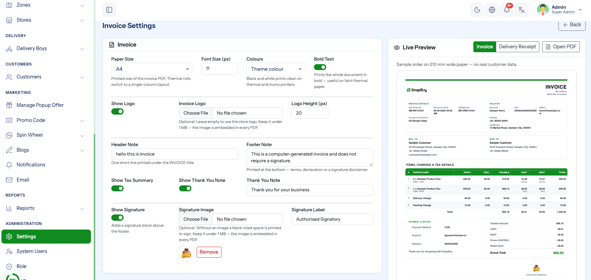

Invoice Settings
Menu path: Settings → Invoice Settings
Controls how two printed documents look: the customer invoice and the delivery receipt riders carry. Paper size, fonts, logo, signature and the notes that print on them.

This page is about paper, not numbering
The invoice prefix and numbering live in General Settings. This page changes how the sheet is laid out and printed.
Live preview
The right-hand panel renders the actual document from the values in the form, on a sample order — no real customer's details appear in it. It refreshes shortly after each change, so you can see the paper before you save.
Switch it between Invoice and Delivery Receipt, or click Open PDF to get the real thing in a new tab.
The preview is the whole point of this page
Paper settings are hard to judge from a form. Change the size or the font, watch the preview reflow, and only then save. It is the same template the PDF uses, at the real paper width.
Invoice
Paper and type
| Field | Meaning |
|---|---|
| Paper Size | A4, A5, Letter, 80 mm roll, 58 mm roll or Custom |
| Width / Height (mm) | Only for Custom — 40–400 mm wide, 50–1200 mm tall |
| Font Size (px) | 6–20 |
| Colors | Theme color or Black and white |
| Bold Text | Heavier text throughout |
Narrow paper switches to a different layout
The 58 mm and 80 mm rolls — and any custom width under 100 mm — print a single-column thermal layout instead of the full invoice. That is automatic; you do not choose a template.
Match the size to the printer you actually own
A4 on a thermal roll comes out unreadable, and an 80 mm layout on A4 wastes most of the sheet. If you print invoices from a counter receipt printer, pick the roll; if they are emailed or filed, pick A4.
Black and white saves money on a colour printer
Black and white drops the accent colour so the sheet prints on any printer without eating colour toner. Worth it if you print every order.
Logo
| Field | Meaning |
|---|---|
| Show Logo | Whether a logo prints at all |
| Invoice Logo | A logo just for invoices |
| Logo Height (px) | 10–120 |
The logo falls back on its own
Leave Invoice Logo empty and the invoice uses your store logo from General Settings. Upload one here only when you want the printed sheet to differ — a higher-contrast mark that survives a cheap printer, for example.
Notes and totals
| Field | Meaning |
|---|---|
| Header Note | One line under the header, up to 120 characters |
| Footer Note | Up to 300 characters at the bottom. Defaults to a "computer-generated invoice" line. |
| Show Tax Summary | Prints the tax breakdown block — the rate-wise summary |
| Show Thank You Note | Whether a closing line prints |
| Thank You Note | The line itself, up to 120 characters |
Keep the tax summary on where tax is filed
Show Tax Summary prints the rate-wise breakdown a customer — and your accountant — needs to claim input credit. Turning it off on a GST or VAT invoice makes the document incomplete for that purpose. Only switch it off if you do not charge tax at all. See Tax Settings.
The header note is the place for registration details
A GSTIN, VAT number, FSSAI licence or a returns-window line all belong here rather than squeezed into the footer.
Signature
| Field | Meaning |
|---|---|
| Show Signature | Whether a signature block prints |
| Signature Image | A scanned signature |
| Signature Label | Caption under it. Defaults to Authorised Signatory. |
A signature image is a signature
Anyone who can reach the invoice PDF gets a clean copy of it. Use a signature you are willing to have circulated, and leave this off unless your paperwork genuinely needs it — the default footer already says the invoice needs no signature.
Delivery Receipt
The slip that travels with the parcel, printed from the order.
| Field | Meaning |
|---|---|
| Default Paper Size | A4, A5, 4 × 6 in label, 80 mm roll or 58 mm roll |
| Font Size (px) | 6–20 |
| Bold Text | Heavier text throughout |
| Show Logo | Whether your logo prints on the slip |
| Show Products | Whether the item list prints |
| Show Prices | Only when cash to collect, Always or Never |
| Show Signature | A line for the customer to sign on delivery |
| Signature Label | Caption. Defaults to Received by. |
| Footer Note | One line at the bottom, up to 200 characters |
"Only when cash to collect" is the safe default for prices
On a prepaid order the rider does not need the amount, and a price on the outside of a parcel tells anyone handling it what is inside and what it is worth. The default prints prices only on COD orders, where the rider has to collect. Set Always only if you have a reason.
Use the 4 × 6 label size for a label printer
That is the standard shipping-label stock. The rolls suit a counter receipt printer; A5 suits an office printer where you cut or fold the sheet.
Turning products off makes a returns dispute harder
The item list on the slip is what a customer and a rider check against at the door. Hiding it saves paper and loses the one piece of evidence that both sides saw at hand-over.
Where these documents are printed
| Document | Printed from |
|---|---|
| Invoice | Orders → open an order → View / Download Invoice |
| Delivery Receipt | The same panel → Print Delivery Receipt |
Defaults
Nothing here is required. A fresh installation prints with sensible defaults — A4, 11 px, colour, logo on, tax summary on, thank-you line on, signature off — so invoices work before anyone opens this page.
Troubleshooting
| Symptom | Cause | Fix |
|---|---|---|
| Invoice prints tiny or cut off | Paper size does not match the printer | Set the size to the paper actually loaded |
| Layout is a single narrow column | A roll size, or a custom width under 100 mm, is selected | Choose A4/A5/Letter for the full layout |
| Logo missing on the PDF | Show Logo off, or no logo uploaded here or in General Settings | Upload one, or switch it on |
| Tax block missing from the invoice | Show Tax Summary off, or the order carried no tax | Switch it on; check Tax Settings |
| Prices missing from the receipt | Show Prices is on Only when cash to collect and the order is prepaid | Expected — set Always to override |
| Preview does not update | The change has not settled yet, or the value is out of range | Wait a moment; check the field is inside its allowed range |
| Custom size ignored | Width or height outside 40–400 mm / 50–1200 mm | Values outside the range fall back to the default |
Checklist
- Paper size matches the printer you will use
- Preview checked for both documents
- Logo set, or deliberately off
- Header note carries your registration details
- Tax summary on if you charge tax
- Receipt price mode decided
- One real invoice and one receipt printed and read on paper